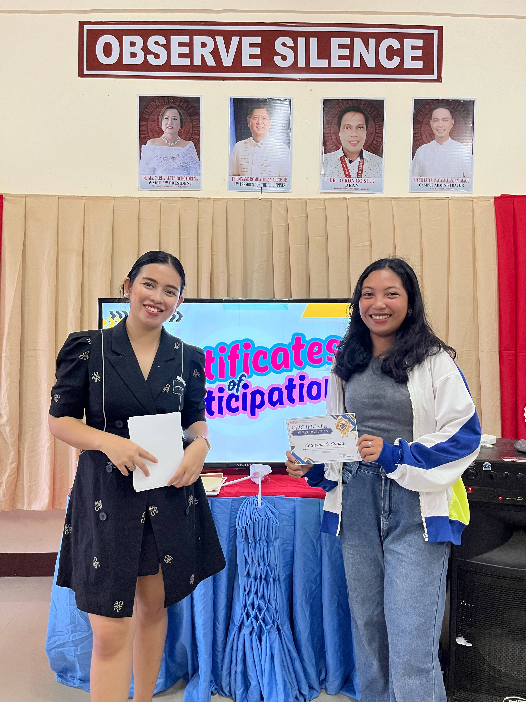
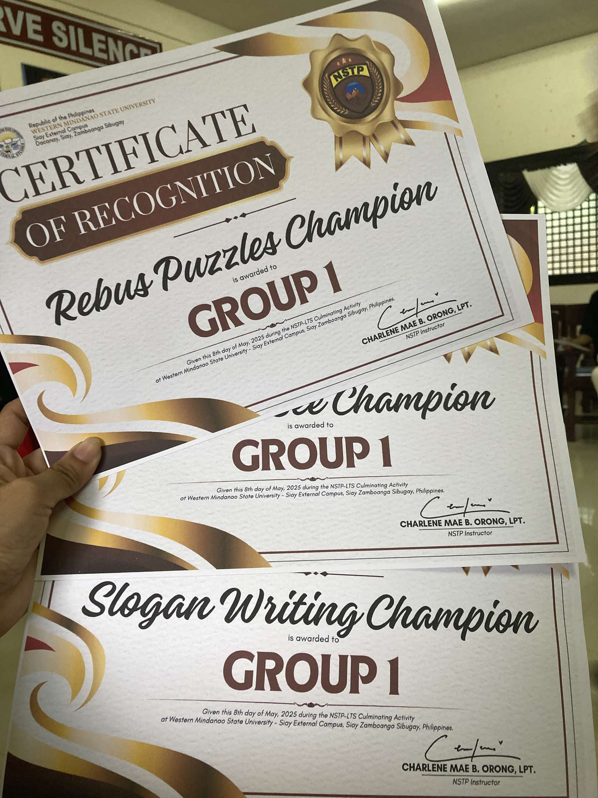
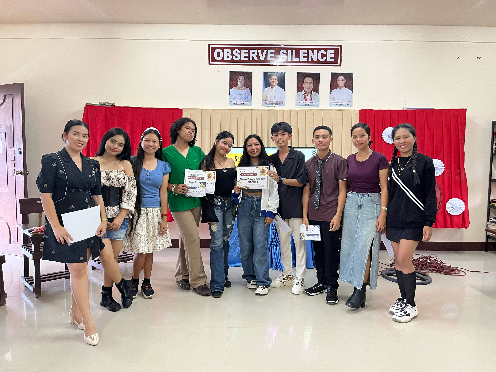
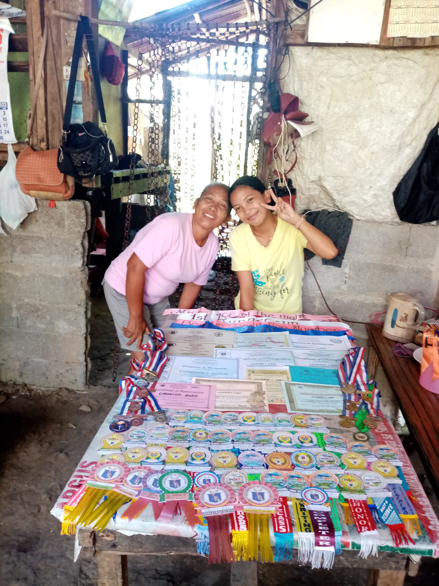

About my Course
Being an ACT student means more than just preparing for a test, it’s about showing up for your future. It’s pushing yourself to understand things more deeply, even when it’s hard. It’s learning how to manage your time, stay focused, and keep going when you're tired or frustrated. It’s about setting goals, making progress step by step, and believing that the effort you're putting in now will open doors later. Being an ACT student means you're not just studying, it means you’re growing.
About me
In case you wanna know me!
Hi! My name is Catherine Gudoy from Mahayahay, Siay, Zamboanga Sibugay. I am 18 years old road to 19 this coming May 20, 2025. I am friendly but most of the time I am a shy type of person especially when I am not familiar of that particular people. I am currently studying ASSOCIATES IN COMPUTER TECHNOLOGY, a first year college student at WESTERN MINDANAO STATE UNIVERSITY. I have no favorites in terms of color, foods, things, and etc. whatever it is as long as it will never cause me harm then I'll deal with it. I have also a friends or should I call them my BEST FRIENDS. They're names are Angelica, Aiza Maxene, and Clairlie, we've met since the first day of class, Since then we're inseparable.
Personal Achievement
NSTP CULMINATION
MAY 08, 2025
Group Activities Awards
May 08, 2025
 Elementary Achievement
Since 2011-2016
Contact
Email: catherinegudoy1221@gmail.com
Facebook: Catherine Gudoy
Cellphone #: